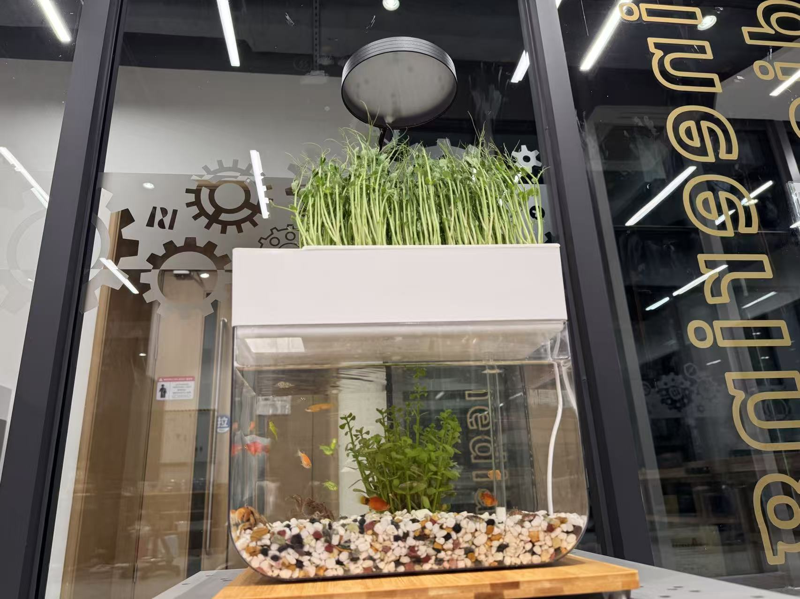
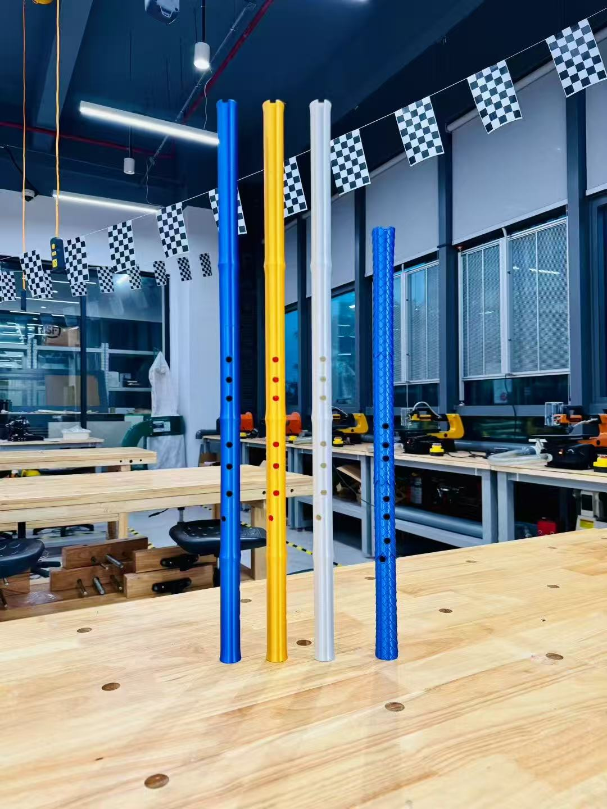
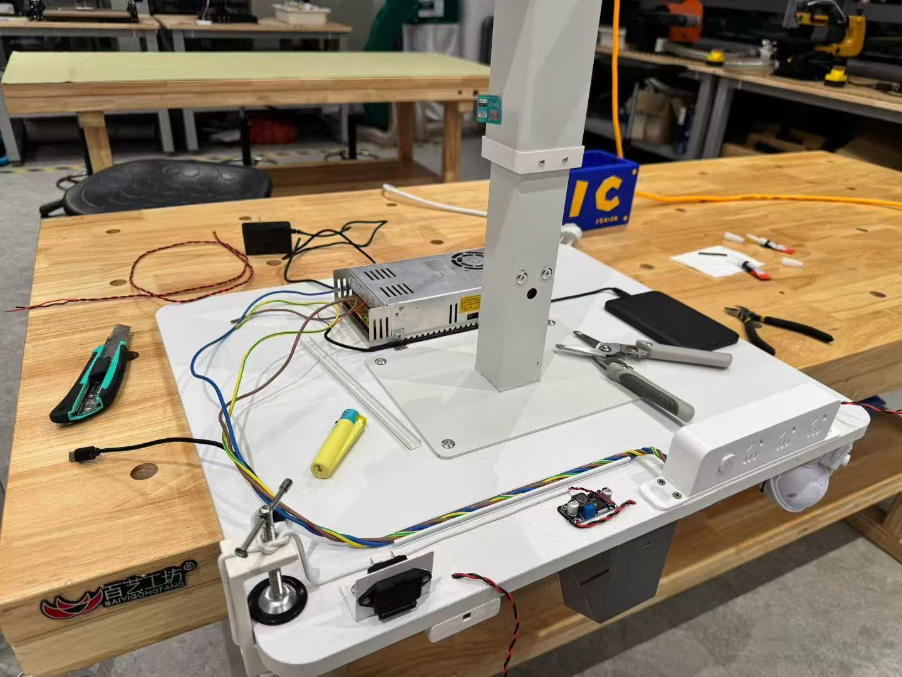
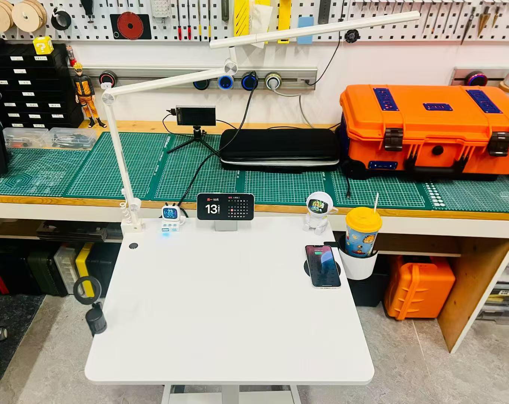

Maker's Club
Where ideas become reality through hands-on technology and creativity
About Maker's Club
The Maker's Club is a community for students who are passionate about exploring, creating, and inventing through hands-on technology.
Here, you can pursue your interests, experiment with new tools, and turn your imagination into reality.
Whether you're designing, coding, or crafting, you can always find something that inspires you here.
Technologies You Can Experience
Laser Cutting
Precision meets creativity — design and cut materials into any shape you imagine using advanced laser cutting tools.
3D Printing
Bring your ideas to life layer by layer. Learn to model and print 3D designs, from small gadgets to complex artistic creations.
Arduino Programming
Explore the world of electronics and coding with Arduino. Create interactive projects that respond to light, motion, and sound.
Soldering
Learn the essential maker skill of soldering — connecting components to build circuits, gadgets, and prototypes.
Recent Projects
Aquaponics
Go-Kart
.jpg)
3D-Printed Dizi
3D-Printed Shoes
.jpg)
Your "Ideal" Desk
Your "Ideal" Desk
To Be Continued...
Innovation never stops. More exciting maker projects are always on the way — come build the next one with us!